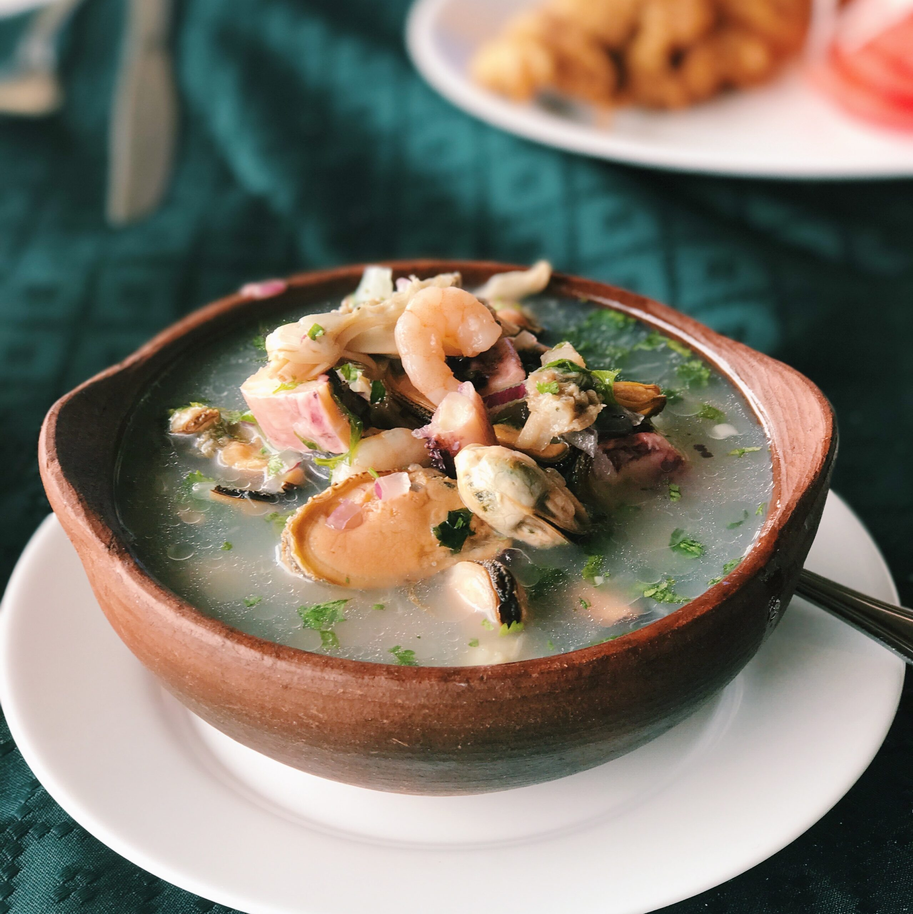

PAILA MARINA

DESCRIPTION
Traditional and beloved soup dish from Chile, best known for its rich flavors and fresh ingredients, making it a popular choice, especially in coastal areas where fresh seafood is readily available.
Paila Marina typically includes an assortment of seafood, such as fish, shellfish and mollusks, on a flavorful broth and various vegetables.
The exact recipe for Paila Marina can vary depending on the region and the personal preferences of the cook.
However, some common ingredients include fish (such as hake or conger eel), shrimp, clams, mussels, scallops, onions, tomatoes, garlic, cilantro, and other herbs and spices.
INGREDIENTS
- 1/2 onion
- 2 potatoes
- 1/2 red pepper
- 1/2 teaspoon of paprika powder
- 1 bay leaf
- 1 teaspoon of dried oregano
- 1 pound of firm white fish or salmon
- 1 pound of shrimp
- 1 pound of fresh mussels or 250g of canned mussels
- 1/2 pound of squids rings (calamari)
- 3/4 white wine cup
- 5 cups of broth of fish or vegetables
- Oil, salt and pepper
INSTRUCTIONS
- Wash the mussels carefully (if you use fresh mussels).
- Cut the onion, peel the potatoes, chop them into wedges, and cut the red pepper into cubes. Cut the fish into cubes.
- In a large pot, heat 1 tbsp oil over medium-high heat. Add the onion, pepper, oregano, bay leaf, paprika, salt, and pepper, and cook for 5 minutes, stirring occasionally.
- Add the potatoes, wine, and broth. Cook until it boils, then reduce heat and simmer for 5 minutes. Add the fish and mussels. Cook for another 5 minutes. Discard any mussel that hasn’t opened. Fish and potatoes should be cooked.
- Add the shrimp and squid. Cook until the shrimp changes color.
- Serve hot, sprinkle with chopped parsley and accompany with lemon wedges.
- ENJOY IT!